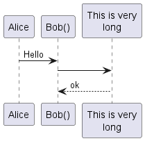
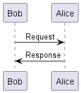
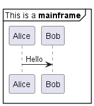

Die Erstellung von Sequenzdiagrammen mit PlantUML ist bemerkenswert einfach. Diese Benutzerfreundlichkeit ist größtenteils auf die benutzerfreundliche Syntax zurückzuführen, die sowohl intuitiv als auch leicht zu merken ist. In erster Linie schätzen die Benutzer die einfache und intuitive Syntax, die PlantUML verwendet. Dieses gut durchdachte Design bedeutet, dass selbst diejenigen, die neu in der Diagrammerstellung sind, die Grundlagen schnell und ohne Schwierigkeiten erfassen können. Ein weiteres Unterscheidungsmerkmal ist die große Ähnlichkeit zwischen der textlichen Darstellung und der grafischen Ausgabe. Diese harmonische Korrelation stellt sicher, dass die textlichen Entwürfe ziemlich genau in grafische Diagramme übersetzt werden, was ein kohärentes und vorhersehbares Design-Erlebnis ohne unangenehme Überraschungen in der Endausgabe ermöglicht. - Effizienter Entwurfsprozess:
Die starke Korrelation zwischen dem Text und dem grafischen Ergebnis vereinfacht nicht nur den Erstellungsprozess, sondern beschleunigt ihn auch erheblich. Die Nutzer profitieren von einem schlankeren Prozess, der weniger zeitaufwändige Überarbeitungen und Anpassungen erfordert. - Visualisierung während des Entwurfs:
Die Möglichkeit, sich das endgültige grafische Ergebnis schon während der Erstellung des Textes vorzustellen, ist eine Funktion, die viele als unschätzbar empfinden. Sie fördert einen reibungslosen Übergang vom ersten Entwurf zur endgültigen Präsentation, steigert die Produktivität und verringert die Fehlerwahrscheinlichkeit. - Einfache Bearbeitungen und Überarbeitungen:
Vor allem die Bearbeitung bestehender Diagramme ist ein problemloser Prozess. Da die Diagramme aus Text generiert werden, ist es f√ºr die Benutzer wesentlich einfacher und pr√§ziser, Anpassungen vorzunehmen als bei der Bearbeitung eines Bildes mit grafischen Werkzeugen. Es l√§uft darauf hinaus, einfach den Text zu √§ndern, ein Prozess, der viel einfacher und weniger fehleranf√§llig ist als √Ñnderungen √ºber eine grafische Oberfl√§che mit der Maus. PlantUML erm√∂glicht einen einfachen und benutzerfreundlichen Ansatz zur Erstellung und Bearbeitung von Sequenzdiagrammen und erf√ºllt die Bed√ºrfnisse von Anf√§ngern und erfahrenen Designern gleicherma√üen. Es nutzt geschickt die Einfachheit von Texteingaben, um visuell anschauliche und genaue Diagramme zu erstellen, und etabliert sich damit als unverzichtbares Werkzeug f√ºr die Diagrammerstellung. Sie k√∂nnen mehr √ºber einige der g√§ngigen Befehle in PlantUML erfahren, um Ihre Diagrammerstellung zu verbessern. Die Zeichenfolge -> wird verwendet, um eine Nachricht zwischen zwei Teilnehmern zu zeichnen. Teilnehmer m√ºssen nicht explizit deklariert werden. Um eine gepunktete Linie zu zeichnen, verwende -->. Es ist auch m√∂glich <- und <-- zu verwenden. Dieses √§ndert nicht die Zeichnung, kann aber die Lesbarkeit erh√∂hen. Beachte: Das gilt nur f√ºr Sequenzdiagramme. In anderen Diagrammen k√∂nnen andere Regeln gelten. üéâ Copied! 
 | @startuml
Alice -> Bob: Authentication Request
Bob --> Alice: Authentication Response
Alice -> Bob: Another authentication Request
Alice <-- Bob: another authentication Response
@enduml
|
WARNING  This translation need to be updated. WARNING Mit dem Schlüsselwort participant lässt sich die Reihenfolge von Teilnehmern ändern. Sie können auch folgende andere Schlüsselwörter anstelle von participant verwenden: actorboundarycontrolentitydatabasecollections
üéâ Copied!
| @startuml
actor Foo1
boundary Foo2
control Foo3
entity Foo4
database Foo5
collections Foo6
Foo1 -> Foo2 : To boundary
Foo1 -> Foo3 : To control
Foo1 -> Foo4 : To entity
Foo1 -> Foo5 : To database
Foo1 -> Foo6 : To collections
@enduml
|
Teilnehmer k√∂nnen mittels as umbenannt werden. Die Hintergrundfarbe von Teilnehmern oder Akteuren kann mithilfe von HTML Farbcodes oder Farbbezeichnungen gesetzt werden. üéâ Copied!
| @startuml
actor Bob #red
' The only difference between actor
'and participant is the drawing
participant Alice
participant "I have a really\nlong name" as L #99FF99
/' You can also declare:
participant L as "I have a really\nlong name" #99FF99
'/
Alice->Bob: Authentication Request
Bob->Alice: Authentication Response
Bob->L: Log transaction
@enduml
|
Mit dem Schl√ºsselwort ‚Äã‚Äãorder ‚Äãkann die Reihenfolge der Teilnehmer angepasst werden. üéâ Copied!
| @startuml
participant Last order 30
participant Middle order 20
participant First order 10
@enduml
|
WARNING ¬†This translation need to be updated.¬†WARNING Der Bezeichner eines Teilnehmers kann mehrere Zeilen enthalten, zum Beispiel mit Titel und UnterTitel. üéâ Copied!
| @startuml
participant Participant [
=Title
----
""SubTitle""
]
participant Bob
Participant -> Bob
@enduml
|
[Ref. QA-15232] Soll die Bezeichnung eines Teilnehmers nicht-alphanumerische Zeichen enthalten (z.B. Klammern oder Zeilenumbr√ºche), m√ºssen Anf√ºhrungszeichen bei der Definition verwendet werden. Das Schl√ºsselwort as kann verwendet werden, um einen Alias f√ºr einen Teilnehmer zu definieren. üéâ Copied!
| @startuml
Alice -> "Bob()" : Hello
"Bob()" -> "This is very\nlong" as Long
' You can also declare:
' "Bob()" -> Long as "This is very\nlong"
Long --> "Bob()" : ok
@enduml
 |
Ein Teilnehmer kann auch eine Nachricht an sich selbst schicken. Die Nachricht kann mehrere Zeilen umfassen. Mit \n k√∂nnen Zeilenumbr√ºche ‚Äãeingef√ºgt werden. üéâ Copied!
| @startuml
Alice->Alice: This is a signal to self.\nIt also demonstrates\nmultiline \ntext
@enduml
|
*[Ref. [QA-1361](https://forum.plantuml.net/1361)]* WARNING ¬†This translation need to be updated.¬†WARNING Text alignment on arrows can be set to left, right or center using skinparam sequenceMessageAlign. You can also use direction or reverseDirection to align text depending on arrow direction. Further details and examples of this are available on the skinparam page. üéâ Copied!
| @startuml
skinparam sequenceMessageAlign right
Bob -> Alice : Request
Alice -> Bob : Response
@enduml
 |
Text of response message below the arrow You can put the text of the response message below the arrow, with the skinparam responseMessageBelowArrow true command. üéâ Copied!
| @startuml
skinparam responseMessageBelowArrow true
Bob -> Alice : hello
Alice -> Bob : ok
@enduml
|
Die Art eines Pfeils kann auf verschiedene Weise geändert werden: - Für eine verloren gegangene Nachricht hängen Sie am Ende des Pfeils ein
x an. - Verwendung von
\ oder / anstelle von < oder >, um nur den unteren oder oberen Teil des Pfeils zu zeichnen. - Verwendung von
>> oder //, um eine nicht ausgefüllte Pfeilspitze zu zeichnen. - Verwendung von
-- anstelle von -, um eine gestrichelte Linie zu zeichnen. - Fügen Sie ein "o" am Ende des Pfeil an
- benutzen Sie zweiseitige Pfeile
<->
üéâ Copied!
| @startuml
Bob ->x Alice
Bob -> Alice
Bob ->> Alice
Bob -\ Alice
Bob \\- Alice
Bob //-- Alice
Bob ->o Alice
Bob o\\-- Alice
Bob <-> Alice
Bob <->o Alice
@enduml
|
Sie k√∂nnen die Farbe einzelner Pfeile mit folgender Notation √§ndern: üéâ Copied!
| @startuml
Bob -[#red]> Alice : hello
Alice -[#0000FF]->Bob : ok
@enduml
|
Das Schl√ºsselwort autonumber kann verwendet werden, um Nachrichten automatisch zu nummerieren. üéâ Copied!
| @startuml
autonumber
Bob -> Alice : Authentication Request
Bob <- Alice : Authentication Response
@enduml
|
Sie k√∂nnen die Anfangsnummer start mit autonumber //start// festlegen und Sie k√∂nnen diese Nummer mit autonumber //start// //increment// um increment hochz√§hlen. üéâ Copied!
| @startuml
autonumber
Bob -> Alice : Authentication Request
Bob <- Alice : Authentication Response
autonumber 15
Bob -> Alice : Another authentication Request
Bob <- Alice : Another authentication Response
autonumber 40 10
Bob -> Alice : Yet another authentication Request
Bob <- Alice : Yet another authentication Response
@enduml
|
Man kann das Format der Aufz√§hlung festlegen, indem man ein doppeltes Anf√ºhrungszeichen verwendet. Dazu wird die Java Klasse DecimalFormat verwendet (0 bedeutet Ziffer, # bedeutet Ziffer und Null wenn die Ziffer fehlt. Au√üerdem k√∂nnen HTML Tags f√ºr die Formatierung verwendet werden. üéâ Copied!
| @startuml
autonumber "<b>[000]"
Bob -> Alice : Authentication Request
Bob <- Alice : Authentication Response
autonumber 15 "<b>(<u>##</u>)"
Bob -> Alice : Another authentication Request
Bob <- Alice : Another authentication Response
autonumber 40 10 "<font color=red><b>Message 0 "
Bob -> Alice : Yet another authentication Request
Bob <- Alice : Yet another authentication Response
@enduml
|
Mit den Schl√ºsselw√∂rtern autonumber stop bzw. autonumber resume //increment// //format// wird die Aufz√§hlung pausiert bzw. wieder fortgesetzt. üéâ Copied!
| @startuml
autonumber 10 10 "<b>[000]"
Bob -> Alice : Authentication Request
Bob <- Alice : Authentication Response
autonumber stop
Bob -> Alice : dummy
autonumber resume "<font color=red><b>Message 0 "
Bob -> Alice : Yet another authentication Request
Bob <- Alice : Yet another authentication Response
autonumber stop
Bob -> Alice : dummy
autonumber resume 1 "<font color=blue><b>Message 0 "
Bob -> Alice : Yet another authentication Request
Bob <- Alice : Yet another authentication Response
@enduml
|
*[Ref. [QA-7119](https://forum.plantuml.net/7119/create-links-after-creating-a-diagram?show=7137#a7137)]* WARNING ¬†This translation need to be updated.¬†WARNING Mit dem Schl√ºsselwort title f√ºgt man einen Titel zur Seite hinzu. Seiten k√∂nnen Kopf- und Fu√üzeilen mit header und footer mitgegeben werden. üéâ Copied!
| @startuml
header Page Header
footer Page %page% of %lastpage%
title Example Title
Alice -> Bob : message 1
Alice -> Bob : message 2
@enduml
|
Das newpage Schl√ºsselwort wird verwendet, um ein Diagramm in mehrere Bilder aufzuteilen. Man kann den Titel der neuen Seite direkt hinter dem newpage Schl√ºsselwort angeben. Das ist sehr praktisch, um gro√üe Diagramme auf mehreren Seiten auszudrucken. üéâ Copied!
| @startuml
Alice -> Bob : message 1
Alice -> Bob : message 2
newpage
Alice -> Bob : message 3
Alice -> Bob : message 4
newpage A title for the\nlast page
Alice -> Bob : message 5
Alice -> Bob : message 6
@enduml
|
Nachrichten können mit den folgenden Schlüsselwörtern gruppiert werden: alt/elseoptloopparbreakcriticalgroup, gefolgt von einem anzuzeigenden Text
Es ist m√∂glich einen Text anzugeben, der im Titel angezeigt werden soll. Das end Schl√ºsselwort wird verwendet, um die Gruppe zu schlie√üen. Weiterhin ist es m√∂glich, mehrere Gruppen ineinander zu schachteln. üéâ Copied!
| @startuml
Alice -> Bob: Authentication Request
alt successful case
Bob -> Alice: Authentication Accepted
else some kind of failure
Bob -> Alice: Authentication Failure
group My own label
Alice -> Log : Log attack start
loop 1000 times
Alice -> Bob: DNS Attack
end
Alice -> Log : Log attack end
end
else Another type of failure
Bob -> Alice: Please repeat
end
@enduml
|
WARNING ¬†This translation need to be updated.¬†WARNING Nach dem Schl√ºsselwort group kann man zwei Texte angeben. Der erste wird im Headerk√§stchen der Gruppe gezeigt, der zweite Text muss in eckige Klammern gestellt sein ([ und ]) und wird neben dem Headerk√§stchen angezeigt. üéâ Copied!
| @startuml
Alice -> Bob: Authentication Request
Bob -> Alice: Authentication Failure
group My own label [My own label 2]
Alice -> Log : Log attack start
loop 1000 times
Alice -> Bob: DNS Attack
end
Alice -> Log : Log attack end
end
@enduml
|
[Ref. QA-2503] Notizen zu einer Nachricht werden mit dem Schl√ºsselwort note left (links) oder note right (rechts) gleich nach der Nachricht eingeleitet. Soll die Notiz mehrere Zeilen umfassen, muss das Schl√ºsselwort end note am Ende der Notiz verwendet werden.. üéâ Copied!
| @startuml
Alice->Bob : hello
note left: this is a first note
Bob->Alice : ok
note right: this is another note
Bob->Bob : I am thinking
note left
a note
can also be defined
on several lines
end note
@enduml
|
Weiterhin ist es M√∂glich, die Notizen rechts, links, oben oder unten an dem Teilnehmer zu platzieren: Es ist m√∂glich, die Notizen durch die √Ñnderung der Hintergrundfarbe hervorzuheben. Au√üerdem kann man durch die Verwendung des end note Schl√ºsselwortes mehrzeilige Notizen erzeugen. üéâ Copied!
| @startuml
participant Alice
participant Bob
note left of Alice #aqua
This is displayed
left of Alice.
end note
note right of Alice: This is displayed right of Alice.
note over Alice: This is displayed over Alice.
note over Alice, Bob #FFAAAA: This is displayed\n over Bob and Alice.
note over Bob, Alice
This is yet another
example of
a long note.
end note
@enduml
|
WARNING ¬†This translation need to be updated.¬†WARNING Mit den Schl√ºsselw√∂rtern hnote und rnote kann man die Form der Notiz √§ndern. üéâ Copied!
| @startuml
caller -> server : conReq
hnote over caller : idle
caller <- server : conConf
rnote over server
"r" as rectangle
"h" as hexagon
endrnote
@enduml
|
*[Ref. [QA-1765](https://forum.plantuml.net/1765/is-it-possible-to-have-different-shapes-for-notes?show=1806#c1806)]* WARNING  This translation need to be updated. WARNING You can directly make a note over all participants, with the syntax: note across: note_description
üéâ Copied!
| @startuml
Alice->Bob:m1
Bob->Charlie:m2
note over Alice, Charlie: Old method for note over all part. with:\n ""note over //FirstPart, LastPart//"".
note across: New method with:\n""note across""
Bob->Alice
hnote across:Note across all part.
@enduml
|
[Ref. QA-9738] You can make several notes aligned at the same level, with the syntax /: - without
/(by default, the notes are not aligned)
üéâ Copied!
| @startuml
note over Alice : initial state of Alice
note over Bob : initial state of Bob
Bob -> Alice : hello
@enduml
|
- with
/(the notes are aligned)
üéâ Copied!
| @startuml
note over Alice : initial state of Alice
/ note over Bob : initial state of Bob
Bob -> Alice : hello
@enduml
|
[Ref. QA-354]Es ist auch m√∂glich, den Text mit Creole-Markup zu formatieren. üéâ Copied!
| @startuml
participant Alice
participant "The **Famous** Bob" as Bob
Alice -> Bob : hello --there--
... Some ~~long delay~~ ...
Bob -> Alice : ok
note left
This is **bold**
This is //italics//
This is ""monospaced""
This is --stroked--
This is __underlined__
This is ~~waved~~
end note
Alice -> Bob : A //well formatted// message
note right of Alice
This is <back:cadetblue><size:18>displayed</size></back>
__left of__ Alice.
end note
note left of Bob
<u:red>This</u> is <color #118888>displayed</color>
**<color purple>left of</color> <s:red>Alice</strike> Bob**.
end note
note over Alice, Bob
<w:#FF33FF>This is hosted</w> by <img sourceforge.jpg>
end note
@enduml
|
Bei Bedarf kann ein Diagramm mit dem "==" Separator in logische Schritte unterteilt werden. üéâ Copied!
| @startuml
== Initialization ==
Alice -> Bob: Authentication Request
Bob --> Alice: Authentication Response
== Repetition ==
Alice -> Bob: Another authentication Request
Alice <-- Bob: another authentication Response
@enduml
|
WARNING ¬†This translation need to be updated.¬†WARNING Die Referenz kann in einem Diagramm mit Hilfe des Schl√ºsselwortes ref over verwendet werden. üéâ Copied!
| @startuml
participant Alice
actor Bob
ref over Alice, Bob : init
Alice -> Bob : hello
ref over Bob
This can be on
several lines
end ref
@enduml
|
Mit ... kann man eine Verz√∂gerung in dem Diagramm anzeigen. In dieser Verz√∂gerung kann au√üerdem eine Nachricht angezeigt werden. üéâ Copied!
| @startuml
Alice -> Bob: Authentication Request
...
Bob --> Alice: Authentication Response
...5 minutes later...
Bob --> Alice: Bye !
@enduml
|
To break long messages, you can manually add \n in your text. Another option is to use maxMessageSize setting: üéâ Copied!
| @startuml
skinparam maxMessageSize 50
participant a
participant b
a -> b :this\nis\nmanually\ndone
a -> b :this is a very long message on several words
@enduml
|
Mit ||| kann ein Abstand zwischen zwei Nachrichten eingef√ºgt werden. Au√üerdem ist es m√∂glich, die Gr√∂√üe des Abstandes in Pixeln festzulegen. üéâ Copied!
| @startuml
Alice -> Bob: message 1
Bob --> Alice: ok
|||
Alice -> Bob: message 2
Bob --> Alice: ok
||45||
Alice -> Bob: message 3
Bob --> Alice: ok
@enduml
|
Mit den Befehlen activate und deactivate k√∂nnen die Teilnehmer aktiviert und deaktiviert werden. Wenn ein Teilnehmer aktiviert wurde, dann erscheint seine Lebenlinie. Die Befehle activate und deactivate wirken nach der vorhergehenden Nachricht. Der Befehl destroy beendet die Lebenslinie eines Teilnehmers. üéâ Copied!
| @startuml
participant User
User -> A: DoWork
activate A
A -> B: << createRequest >>
activate B
B -> C: DoWork
activate C
C --> B: WorkDone
destroy C
B --> A: RequestCreated
deactivate B
A -> User: Done
deactivate A
@enduml
|
Es ist auch m√∂glich, geschachtelte Lebenslinien zu erzeugen. Au√üerdem kann man einer Lebenslinie eine Farbe zuweisen. üéâ Copied!
| @startuml
participant User
User -> A: DoWork
activate A #FFBBBB
A -> A: Internal call
activate A #DarkSalmon
A -> B: << createRequest >>
activate B
B --> A: RequestCreated
deactivate B
deactivate A
A -> User: Done
deactivate A
@enduml
|
WARNING ¬†This translation need to be updated.¬†WARNING A new command return for generating a return message with optional text label. The point returned to is the point that cause the most recently activated life-line. The syntax is simply return label where label, if provided, can be any string acceptable on conventional messages. üéâ Copied!
| @startuml
Bob -> Alice : hello
activate Alice
Alice -> Alice : some action
return bye
@enduml
|
Das create Schl√ºsselwort kann kurz vor dem ersten Empfang einer Nachricht verwendet werden, um anzuzeigen, das die Nachricht f√ºr die Erstellung des neuen Objektes verantwortlich ist. üéâ Copied!
| @startuml
Bob -> Alice : hello
create Other
Alice -> Other : new
create control String
Alice -> String
note right : You can also put notes!
Alice --> Bob : ok
@enduml
|
Immediately after specifying the target participant, the following syntax can be used: ++ Activate the target (optionally a #color may follow this)-- Deactivate the source** Create an instance of the target!! Destroy an instance of the target
üéâ Copied!
| @startuml
alice -> bob ++ : hello
bob -> bob ++ : self call
bob -> bib ++ #005500 : hello
bob -> george ** : create
return done
return rc
bob -> george !! : delete
return success
@enduml
|
*[Ref. [QA-4834](https:forum.plantuml.net/4834/activation-shorthand-for-sequence-diagrams?show=13054#c13054), [QA-9573](https:forum.plantuml.net/9573) and [QA-13234](https://forum.plantuml.net/13234)]* WARNING ¬†This translation need to be updated.¬†WARNING Um sich nur auf ein Teil des Diagramms zu konzentrieren, kann man eingehende und ausgehende Pfeile verwenden. Mit eckigen Klammern kann man die linke "[" oder die rechte "]" Seite des Pfeils festlegen. üéâ Copied!
| @startuml
[-> A: DoWork
activate A
A -> A: Internal call
activate A
A ->] : << createRequest >>
A<--] : RequestCreated
deactivate A
[<- A: Done
deactivate A
@enduml
|
Die folgende Syntax ist auch m√∂glich: üéâ Copied!
| @startuml
[-> Bob
[o-> Bob
[o->o Bob
[x-> Bob
[<- Bob
[x<- Bob
Bob ->]
Bob ->o]
Bob o->o]
Bob ->x]
Bob <-]
Bob x<-]
@enduml
|
WARNING ¬†This translation need to be updated.¬†WARNING Es gibt kurze Pfeile indem man ? verwendet. üéâ Copied!
| @startuml
?-> Alice : ""?->""\n**short** to actor1
[-> Alice : ""[->""\n**from start** to actor1
[-> Bob : ""[->""\n**from start** to actor2
?-> Bob : ""?->""\n**short** to actor2
Alice ->] : ""->]""\nfrom actor1 **to end**
Alice ->? : ""->?""\n**short** from actor1
Alice -> Bob : ""->"" \nfrom actor1 to actor2
@enduml
|
[Ref. QA-310] With teoz usage it is possible to add anchors to the diagram and use the anchors to specify duration time. üéâ Copied!
| @startuml
!pragma teoz true
{start} Alice -> Bob : start doing things during duration
Bob -> Max : something
Max -> Bob : something else
{end} Bob -> Alice : finish
{start} <-> {end} : some time
@enduml
|
You can use the `-P` [command-line](command-line) option to specify the pragma: ``` java -jar plantuml.jar -Pteoz=true ``` *[Ref. [issue-582](https://github.com/plantuml/plantuml/issues/582)]* WARNING ¬†This translation need to be updated.¬†WARNING Man kann den Objekten Stereotypen zuweisen, indem man den Stereotyp mit zwei spitzen √∂ffnenden "<<" und schlie√üenden Klammern ">>" umschlie√üt. Innerhalb des Stereotypen ist es m√∂glich einen hervorgehobenen Buchstaben hinzuzuf√ºgen, der in einem farbigen Kreis dargestellt wird. Dazu verwendet man die folgende Syntax: "(X,color)". üéâ Copied!
| @startuml
participant "Famous Bob" as Bob << Generated >>
participant Alice << (C,#ADD1B2) Testable >>
Bob->Alice: First message
@enduml
|
Standardgem√§√ü werden franz√∂sisches Anf√ºhrungszeichen verwendet, um den Sterotyp zu kennzeichnen. Dieses Verhalten kann √ºber den skinparam guillemet Befehl beeinflusst werden. üéâ Copied!
| @startuml
skinparam guillemet false
participant "Famous Bob" as Bob << Generated >>
participant Alice << (C,#ADD1B2) Testable >>
Bob->Alice: First message
@enduml
|
üéâ Copied!
| @startuml
participant Bob << (C,#ADD1B2) >>
participant Alice << (C,#ADD1B2) >>
Bob->Alice: First message
@enduml
|
Mit Creole-Markup ist es m√∂glich, die Überschrift des Diagramms zu formatieren. üéâ Copied!
| @startuml
title __Simple__ **communication** example
Alice -> Bob: Authentication Request
Bob -> Alice: Authentication Response
@enduml
|
Eine neue Zeile kann mit \n in die Überschrift der Bezeichnung eingetragen werden. üéâ Copied!
| @startuml
title __Simple__ communication example\non several lines
Alice -> Bob: Authentication Request
Bob -> Alice: Authentication Response
@enduml
|
Mehrzeilige Überschriften k√∂nnen mit den title und end title Schl√ºsselw√∂rtern erstellt werden. üéâ Copied!
| @startuml
title
<u>Simple</u> communication example
on <i>several</i> lines and using <font color=red>html</font>
This is hosted by <img:sourceforge.jpg>
end title
Alice -> Bob: Authentication Request
Bob -> Alice: Authentication Response
@enduml
|
Es ist m√∂glich Boxen um Teilnehmer zu zeichnen, indem man die Befehle box und end box benutzt. Man kann optional noch einen Titel oder eine Hintergrundfarbe nach dem box Schl√ºsselwort hinzuf√ºgen. üéâ Copied!
| @startuml
box "Internal Service" #LightBlue
participant Bob
participant Alice
end box
participant Other
Bob -> Alice : hello
Alice -> Other : hello
@enduml
|
WARNING ¬†This translation need to be updated.¬†WARNING Die Fu√üzeile eines Diagramms kann mit dem hide footbox Schl√ºsselwort entfernt werden. üéâ Copied!
| @startuml
hide footbox
title Footer removed
Alice -> Bob: Authentication Request
Bob --> Alice: Authentication Response
@enduml
|
Mit dem skinparam Befehl kann die Farbe und die Schriftart der Zeichnung ver√§ndert werden. Sie k√∂nnen den Befehl auf die folgenden Arten verwenden: Es ist auch m√∂glich, weitere Parameter zu editieren. Dies ist in den folgenden Beispielen dargestellt: üéâ Copied!
| @startuml
skinparam sequenceArrowThickness 2
skinparam roundcorner 20
skinparam maxmessagesize 60
skinparam sequenceParticipant underline
actor User
participant "First Class" as A
participant "Second Class" as B
participant "Last Class" as C
User -> A: DoWork
activate A
A -> B: Create Request
activate B
B -> C: DoWork
activate C
C --> B: WorkDone
destroy C
B --> A: Request Created
deactivate B
A --> User: Done
deactivate A
@enduml
|
üéâ Copied!
| @startuml
skinparam backgroundColor #EEEBDC
skinparam handwritten true
skinparam sequence {
ArrowColor DeepSkyBlue
ActorBorderColor DeepSkyBlue
LifeLineBorderColor blue
LifeLineBackgroundColor #A9DCDF
ParticipantBorderColor DeepSkyBlue
ParticipantBackgroundColor DodgerBlue
ParticipantFontName Impact
ParticipantFontSize 17
ParticipantFontColor #A9DCDF
ActorBackgroundColor aqua
ActorFontColor DeepSkyBlue
ActorFontSize 17
ActorFontName Aapex
}
actor User
participant "First Class" as A
participant "Second Class" as B
participant "Last Class" as C
User -> A: DoWork
activate A
A -> B: Create Request
activate B
B -> C: DoWork
activate C
C --> B: WorkDone
destroy C
B --> A: Request Created
deactivate B
A --> User: Done
deactivate A
@enduml
|
Einige Werte, die den Abstand zwischen Elementen definieren, k√∂nnen angepasst werden. üéâ Copied!
| @startuml
skinparam ParticipantPadding 20
skinparam BoxPadding 10
box "Foo1"
participant Alice1
participant Alice2
end box
box "Foo2"
participant Bob1
participant Bob2
end box
Alice1 -> Bob1 : hello
Alice1 -> Out : out
@enduml
|
Normal arrow üéâ Copied!
| @startuml
participant Alice as a
participant Bob as b
a -> b : ""-> ""
a ->> b : ""->> ""
a -\ b : ""-\ ""
a -\\ b : ""-\\\\""
a -/ b : ""-/ ""
a -// b : ""-// ""
a ->x b : ""->x ""
a x-> b : ""x-> ""
a o-> b : ""o-> ""
a ->o b : ""->o ""
a o->o b : ""o->o ""
a <-> b : ""<-> ""
a o<->o b : ""o<->o""
a x<->x b : ""x<->x""
a ->>o b : ""->>o ""
a -\o b : ""-\o ""
a -\\o b : ""-\\\\o""
a -/o b : ""-/o ""
a -//o b : ""-//o ""
a x->o b : ""x->o ""
@enduml
|
Itself arrow üéâ Copied!
| @startuml
participant Alice as a
participant Bob as b
a -> a : ""-> ""
a ->> a : ""->> ""
a -\ a : ""-\ ""
a -\\ a : ""-\\\\""
a -/ a : ""-/ ""
a -// a : ""-// ""
a ->x a : ""->x ""
a x-> a : ""x-> ""
a o-> a : ""o-> ""
a ->o a : ""->o ""
a o->o a : ""o->o ""
a <-> a : ""<-> ""
a o<->o a : ""o<->o""
a x<->x a : ""x<->x""
a ->>o a : ""->>o ""
a -\o a : ""-\o ""
a -\\o a : ""-\\\\o""
a -/o a : ""-/o ""
a -//o a : ""-//o ""
a x->o a : ""x->o ""
@enduml
|
Incoming and outgoing messages (with '[', ']')Incoming messages (with '[') üéâ Copied!
| @startuml
participant Alice as a
participant Bob as b
[-> b : ""[-> ""
[->> b : ""[->> ""
[-\ b : ""[-\ ""
[-\\ b : ""[-\\\\""
[-/ b : ""[-/ ""
[-// b : ""[-// ""
[->x b : ""[->x ""
[x-> b : ""[x-> ""
[o-> b : ""[o-> ""
[->o b : ""[->o ""
[o->o b : ""[o->o ""
[<-> b : ""[<-> ""
[o<->o b : ""[o<->o""
[x<->x b : ""[x<->x""
[->>o b : ""[->>o ""
[-\o b : ""[-\o ""
[-\\o b : ""[-\\\\o""
[-/o b : ""[-/o ""
[-//o b : ""[-//o ""
[x->o b : ""[x->o ""
@enduml
|
Outgoing messages (with ']') üéâ Copied!
| @startuml
participant Alice as a
participant Bob as b
a ->] : ""->] ""
a ->>] : ""->>] ""
a -\] : ""-\] ""
a -\\] : ""-\\\\]""
a -/] : ""-/] ""
a -//] : ""-//] ""
a ->x] : ""->x] ""
a x->] : ""x->] ""
a o->] : ""o->] ""
a ->o] : ""->o] ""
a o->o] : ""o->o] ""
a <->] : ""<->] ""
a o<->o] : ""o<->o]""
a x<->x] : ""x<->x]""
a ->>o] : ""->>o] ""
a -\o] : ""-\o] ""
a -\\o] : ""-\\\\o]""
a -/o] : ""-/o] ""
a -//o] : ""-//o] ""
a x->o] : ""x->o] ""
@enduml
|
Short incoming and outgoing messages (with '?')Short incoming (with '?') üéâ Copied!
| @startuml
participant Alice as a
participant Bob as b
a -> b : //Long long label//
?-> b : ""?-> ""
?->> b : ""?->> ""
?-\ b : ""?-\ ""
?-\\ b : ""?-\\\\""
?-/ b : ""?-/ ""
?-// b : ""?-// ""
?->x b : ""?->x ""
?x-> b : ""?x-> ""
?o-> b : ""?o-> ""
?->o b : ""?->o ""
?o->o b : ""?o->o ""
?<-> b : ""?<-> ""
?o<->o b : ""?o<->o""
?x<->x b : ""?x<->x""
?->>o b : ""?->>o ""
?-\o b : ""?-\o ""
?-\\o b : ""?-\\\\o ""
?-/o b : ""?-/o ""
?-//o b : ""?-//o ""
?x->o b : ""?x->o ""
@enduml
|
Short outgoing (with '?') üéâ Copied!
| @startuml
participant Alice as a
participant Bob as b
a -> b : //Long long label//
a ->? : ""->? ""
a ->>? : ""->>? ""
a -\? : ""-\? ""
a -\\? : ""-\\\\?""
a -/? : ""-/? ""
a -//? : ""-//? ""
a ->x? : ""->x? ""
a x->? : ""x->? ""
a o->? : ""o->? ""
a ->o? : ""->o? ""
a o->o? : ""o->o? ""
a <->? : ""<->? ""
a o<->o? : ""o<->o?""
a x<->x? : ""x<->x?""
a ->>o? : ""->>o? ""
a -\o? : ""-\o? ""
a -\\o? : ""-\\\\o?""
a -/o? : ""-/o? ""
a -//o? : ""-//o? ""
a x->o? : ""x->o? ""
@enduml
|
By default üéâ Copied!
| @startuml
Bob -> Alice : hello
Alice -> Bob : ok
@enduml
|
LifelineStrategy üéâ Copied!
| @startuml
skinparam lifelineStrategy nosolid
Bob -> Alice : hello
Alice -> Bob : ok
@enduml
|
[Ref. QA-9016] In order to have solid life line in sequence diagrams, you can use: skinparam lifelineStrategy solid üéâ Copied!
| @startuml
skinparam lifelineStrategy solid
Bob -> Alice : hello
Alice -> Bob : ok
@enduml
|
[Ref. QA-2794]style strictuml To be conform to strict UML (for arrow style: emits triangle rather than sharp arrowheads), you can use: skinparam style strictuml
üéâ Copied!
| @startuml
skinparam style strictuml
Bob -> Alice : hello
Alice -> Bob : ok
@enduml
|
[Ref. QA-1047] By default, all participants are displayed. üéâ Copied!
| @startuml
participant Alice
participant Bob
participant Carol
Alice -> Bob : hello
@enduml
|
But you can hide unlinked participant. üéâ Copied!
| @startuml
hide unlinked
participant Alice
participant Bob
participant Carol
Alice -> Bob : hello
@enduml
|
[Ref. QA-4247] It is possible to color a group messages: üéâ Copied!
| @startuml
Alice -> Bob: Authentication Request
alt#Gold #LightBlue Successful case
Bob -> Alice: Authentication Accepted
else #Pink Failure
Bob -> Alice: Authentication Rejected
end
@enduml
|
[Ref. QA-4750 and QA-6410] üéâ Copied!
| @startuml
mainframe This is a **mainframe**
Alice->Bob : Hello
@enduml
 |
[Ref. QA-4019 and Issue#148] You can use the (nn) option (before or after arrow) to make the arrows slanted, where nn is the number of shift pixels. [Available only after v1.2022.6beta+] üéâ Copied!
| @startuml
A ->(10) B: text 10
B ->(10) A: text 10
A ->(10) B: text 10
A (10)<- B: text 10
@enduml
|
üéâ Copied!
| @startuml
A ->(40) B++: Rq
B -->(20) A--: Rs
@enduml
|
[Ref. QA-14145] üéâ Copied!
| @startuml
!pragma teoz true
A ->(50) C: Starts\nwhen 'B' sends
& B ->(25) C: \nBut B's message\n arrives before A's
@enduml
|
[Ref. QA-6684] üéâ Copied!
| @startuml
!pragma teoz true
S1 ->(30) S2: msg 1\n
& S2 ->(30) S1: msg 2
note left S1: msg\nS2 to S1
& note right S2: msg\nS1 to S2
@enduml
|
[Ref. QA-1072] | |